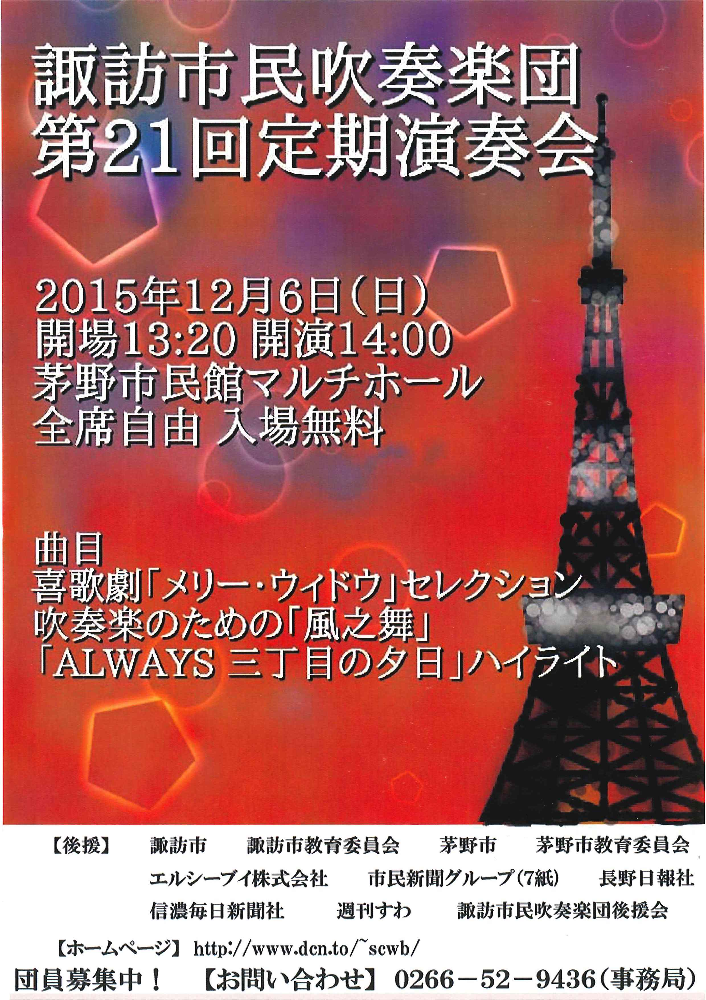

コンサート報告（2015年）
2025年 ｜
2024年 ｜
2023年 ｜
2022年
2021年 ｜
2020年 ｜
2019年 ｜
2018年 ｜
2017年
2016年 ｜
2015年 ｜
2014年 ｜
2013年 ｜
2012年
2011年 ｜
2010年 ｜
2009年 ｜
2008年 ｜
2007年
2006年 ｜
2005年 ｜
2004年 ｜
2003年 ｜
2002年
アイスキャンドル点灯式出演 演奏終了（2015.2.7）
諏訪の冬を彩るイベント「アイスキャンドル」の点灯式に、５年連続で当団トランペットパートが出演しました。今年は場所が少し変わり、歩道の真ん中で演奏するようなかたちになりましたが、その分周囲から注目されて演奏できたように思います。寒い中ではありましたが、多くのお客様に聞いていただき、誠にありがとうございました。
蓼科高原ロビーコンサート 演奏終了（2015.4.25）
蓼科グランドホテル滝の湯さんにお邪魔して、夕食後のロビーコンサートに出演しました。初めての出演で不安もありましたが、春の観光シーズン入りということもあって多くのお客様に聞いていただき、楽しく演奏することができました。諏訪の思い出のひとつとなったら嬉しく思います。ありがとうございました。
並木DEコンサート 演奏終了（2015.5.23）
諏訪市のアマチュア音楽団体が5月～9月の間、月1回出演している「並木DEコンサート」は、今回、記念すべき第100回を迎えました。毎年5月に出演させていただいている当団が、幸運な巡りあわせでこの第100回コンサートを担当しました。
当日は天候にも恵まれ、立ち見を含む多くのお客様にご来場いただきました。お楽しみいただけたなら幸いに思います。私たちにとっても楽しみな春の行事ですので、これからもこの並木DEコンサートが長く続くことを期待するとともに、がんばっていきたいと思います。
柿蔭山房 七夕コンサート 演奏終了（2015.7.4）
諏訪出身の歌人・島木赤彦の旧宅である、下諏訪町の柿蔭山房で開催された「七夕祭」に当団メンバーが出演し、アンサンブル演奏を披露しました。途中で雨天となり、演奏場所を変更するなどのハプニングもありましたが、多くのお客様に耳を傾けていただき、大変うれしく思います。ありがとうございました。
聖母寮 慰問演奏 演奏終了（2015.7.25）
聖母寮の慰問演奏も今年で10年連続となり、すっかり夏の恒例行事になりました。今年も多くのお年寄りの皆さんにご来場いただき、私たちの演奏に合わせて口ずさんだり手拍子を打ったり、楽しんでいただけたように思います。ありがとうございました。
紅林荘 敬老会出演 演奏終了（2015.9.12）
富士見町にある老人ホーム紅林荘の敬老会に出演しました。ステージの関係で、今回はクラリネット、ホルン、バリチューバのアンサンブル３チームが出演。途中、参加者の皆さんにも歌っていただくなど、大変盛り上がりました。 歓迎いただき、ありがとうございました。
城南小学校 秋祭り出演 演奏終了（2015.10.3）
市内城南小学校の体育館で開催された秋祭りに初めて出演しました。小学校だけあって大変賑やかな会場での演奏でしたが、熱心に聞いてくれる子供たちや、カメラを向けてくれるお父さん・お母さんたちもおり、歓迎していただきました。いろいろとご配慮いただき、厚く御礼申し上げます。
第21回 上社の杜音楽祭 演奏終了（2015.10.4）
諏訪市博物館前の広場で開催される音楽祭、昨年は台風直撃による荒天のため、20回にして初の中止となってしまいましたが、本年は快晴に恵まれました。当団および市内４中学校吹奏楽部の演奏に続き、本年も160人編成の合同演奏を披露しました。気持ちもひとつにまとまり、良い演奏ができたのではないかと思います。
好天にも恵まれ、多くのお客様にご来場いただきました。誠にありがとうございました。
第21回 定期演奏会 演奏終了（2015.12.6）
 最大の行事、定期演奏会を今年も茅野市民館で開催することができました。好天にも恵まれて500人を超えるお客様にご来場いただき、心より深く御礼申し上げます。
今回は「戦後70年」をテーマに、諏訪の昔の写真を映写しながら懐かしい曲をお楽しみいただきました。いかがでしたでしょうか。
また、今回も伊那市立春富中学校吹奏楽部の皆さんがアンサンブルやマーチング演奏で会場を盛り上げてくださいました。多くの皆様のご協力で演奏会ができたこと、大変うれしく思っております。今後とも諏訪市民吹奏楽団を、どうぞよろしくお願いいたします。